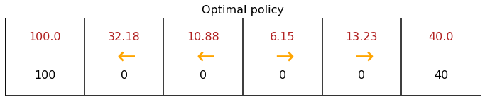
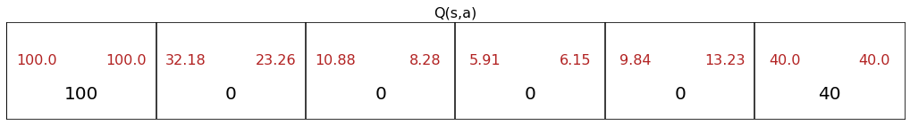

State Action Value Function Example
In this Jupyter notebook, you can modify the mars rover example to see how the values of Q(s,a) will change depending on the rewards and discount factor changing.
[1]:
import numpy as np
from utils import *
[2]:
# Do not modify
num_states = 6
num_actions = 2
[5]:
terminal_left_reward = 100
terminal_right_reward = 40
each_step_reward = 0
# Discount factor
gamma = 0.5
# Probability of going in the wrong direction
misstep_prob = 0.4
[6]:
generate_visualization(terminal_left_reward, terminal_right_reward, each_step_reward, gamma, misstep_prob)


[ ]: